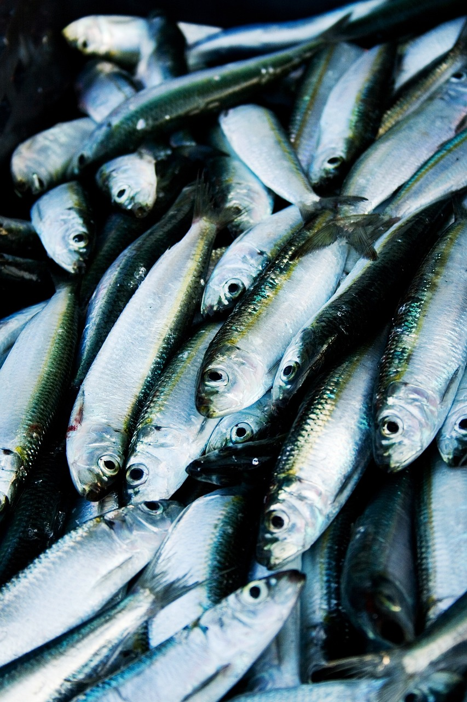
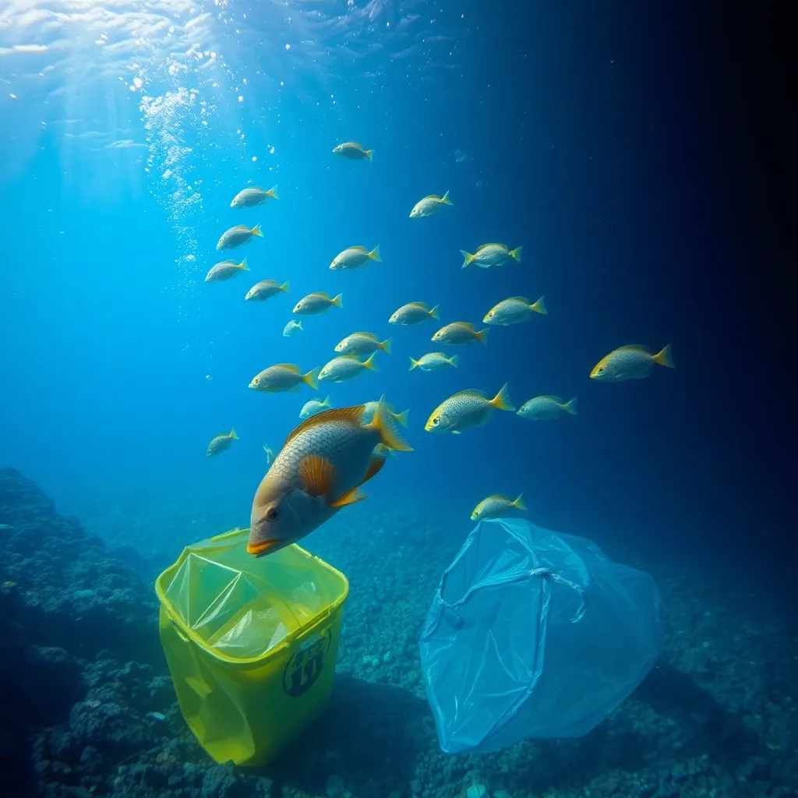

Biodiversity and Healthy Marine Ecosystems
Marine ecosystems are the lifeblood of our planet, providing essential services that support human life and the health of the global environment. SDG 14, “Life Below Water,” emphasizes the need to protect and sustainably manage the world’s oceans, seas, and marine resources. Oceans host a vast diversity of species, regulate the Earth’s climate, and provide food and livelihoods for billions of people.
Challenges Facing Marine Biodiversity
Human activities are placing immense pressure on marine ecosystems. Key challenges include:
- Overfishing: Unsustainable fishing practices deplete fish populations and disrupt marine food webs.
- Pollution: Plastic waste, oil spills, and chemical runoff from agriculture and industry pollute marine environments, harming marine life and reducing water quality.
- Climate Change: Rising sea temperatures and ocean acidification threaten coral reefs, fish populations, and the overall health of marine ecosystems.
Impact on Global Populations and Food Security
Marine biodiversity loss has far-reaching impacts on communities around the world. These include:
- Food insecurity: With over 3 billion people relying on seafood as a primary source of protein, declining fish stocks can lead to malnutrition and food shortages.
- Economic instability: The degradation of marine ecosystems negatively impacts industries like fishing and tourism, threatening the livelihoods of coastal communities.
- Increased vulnerability: Coastal areas become more vulnerable to extreme weather events and sea-level rise as ecosystems like coral reefs and mangroves degrade.
Solutions to Protect Marine Ecosystems
To safeguard marine biodiversity and ensure the health of oceans for future generations, it is crucial to adopt sustainable practices. Key actions include:
- Sustainable fishing: Implementing regulations and sustainable fishing practices to prevent overfishing and allow fish populations to recover.
- Marine protected areas (MPAs): Establishing MPAs to conserve marine habitats and allow ecosystems to thrive without human interference.
- Reducing pollution:Minimizing plastic use, improving waste management, and reducing chemical runoff to protect marine environments.
- Restoring habitats: Rehabilitating damaged coastal areas by planting mangroves, restoring coral reefs, and protecting other vital ecosystems.
Reflective Questions
- 1. How can I reduce my use of single-use plastics to protect marine life?
- 2. How do my food choices impact the health of marine ecosystems?
- 3. What can my community do to reduce marine pollution?
- 4. How can we support sustainable fishing practices to protect global fish stocks?
- 5. What actions can we take to raise awareness about the importance of marine biodiversity?
Community and Global Engagement Challenges
- 1. Collaborate with your school or community to develop a project that promotes marine conservation, such as building awareness about sustainable fishing or reducing plastic use.
- 2. For one month, commit to buying locally-grown, organic produce. Track how this choice impacts your awareness of sustainable farming practices and the local agricultural economy.
- 3. Participate in a community-supported agriculture (CSA) program or buy from local farmers markets. Learn about the farming practices of small-scale farmers and reflect on how they contribute to sustainable soil management.
- 4. Develop a personal or family plan to reduce food waste and support sustainable agriculture. This could include meal planning, composting, or reducing your consumption of processed and non-local foods.
- 5. If you garden, challenge yourself to avoid synthetic fertilizers for one growing season. Instead, use compost, manure, or other organic alternatives, and observe how it affects plant growth and soil quality.
Personal and Community Challenges:
- 1. For one month, reduce or eliminate the use of single-use plastics. Reflect on how this small action can help reduce marine pollution.
- 2. Research marine protected areas and advocate for their expansion in your country. Engage others in the discussion of why MPAs are crucial for biodiversity.
- 3. Buy seafood from local, sustainable sources. Learn about the fishing practices of your local community and how they contribute to marine conservation.
- 4. Organize a film screening, webinar, or discussion on marine biodiversity and its importance to global ecosystems. Reflect on actionable steps to improve marine health in your area.
- 5. Work with your community to reduce pollution, advocate for sustainable fishing practices, and promote the protection of coastal and marine habitats.